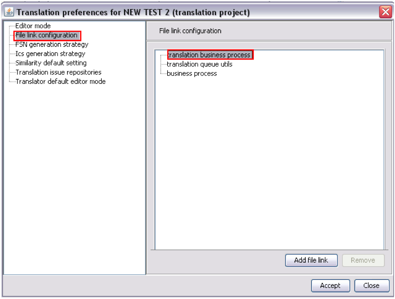

File link configuration

- This feature allows the organization of business process files or any other file into
workbench categories. For example, the “translation business process” category is used to
identify all the translation workflow files. This feature is used to provide a more
intuitive user interface at the moment of generating a worklist and choosing a
workflow.